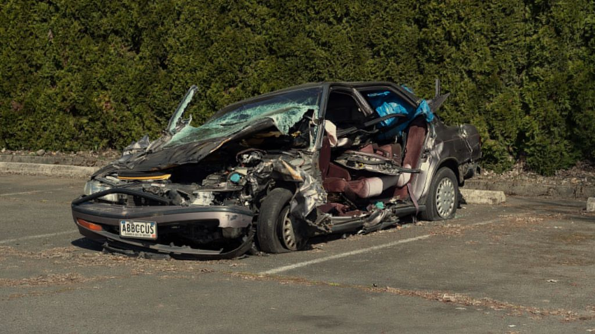

The Buddyrevelles Prove Experience Still Matters on the Brilliantly Restless 'Anything for Abbey'

More than twenty-five years after their first appearance on the independent Wisconsin music scene, The Buddyrevelles seem to be the group of people that has always been driven by the thirst for exploration. Many bands tend to fall into a comfortable pattern, but The Buddyrevelles has managed to maintain their distinctive mix of melody and experimentation all the way through. As usual, the band does not disappoint its fans with anything new, and its newest single Anything for Abbey only reinforces the impression of being a talented and respected group of musicians.
It has to be mentioned that Anything for Abbey has served as a first teaser for the upcoming album called The Conviction, set to be released on June 2026. Being the third and the final piece in the Trilogy of the EPs project created by The Buddyrevelles within three years, the song is a continuation of the creative efforts aimed at further development and expansion of the band's sound.
As expected, the song has all the qualities that allow calling it the product of the band's talent. First of all, Anything for Abbey features a combination of complex rhythms, sophisticated guitar melodies, and precise transitions that demonstrate the level of skills possessed by the members of The Buddyrevelles. What is important, the technical nature of the song does not undermine its melodious nature, making it interesting and rewarding for the listener.
What adds up to it, the song's complex structure goes perfectly together with the songwriting style of the band. In other words, anything complicated in it contributes to the creation of its artistic value. In this respect, the music reminds one of the songs by Fugazi, Jawbox, and Shiner, and also resembles some pieces by The Dismemberment Plan to a certain extent.
The Buddyrevelles' decision to stay with the power trio formation helps them to deliver their message successfully and vividly. The guitar playing of Aaron Grant, the bass work of Scott Hoch, and the energetic drumming of Dan Reinholdt make everything possible. The trio sounds so powerful that one can hardly imagine them to be a three-piece unit.
Those listeners who are well acquainted with the band will probably recognize many of the features that made The Buddyrevelles so unique from the very beginning. Since the release of September, November in 1998, the group has constantly combined the emotions with intricate arrangements of its pieces. The group's songs are thought-out yet catchy at the same time.
Moreover, the song's style seems to be timeless. At present days, the indie rock tends to oscillate between the extremes of polish accessibility and abstraction, but The Buddyrevelles managed to find their own niche, where they successfully combine both of them. Anything for Abbey is an evidence of it once again.
The song's progression and gradual climb towards the climax remind one of the albums that were known for their intelligence, tension, and melody. Thus, one may notice numerous similarities between the song and albums like Emergency & I, Yank Crime, Fantastic Planet, and others. Apart from music, one may observe that there is also something that unites this work with films such as High Fidelity or Rushmore, which featured people looking for life meanings in art and self-expression.
With The Conviction in focus, the band has shown one more exciting example of their music, which only proves that The Buddyrevelles is not going to stop developing anymore. The upcoming album of the band seems to deserve attention.
Overall, it is always nice to see how an artist or a musician continues evolving for decades, developing his or her unique style and mastering it all the way to perfection. Such is the case with The Buddyrevelles.
This dispatch was last updated on June 17, 2026